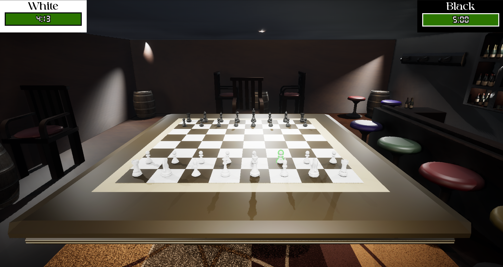
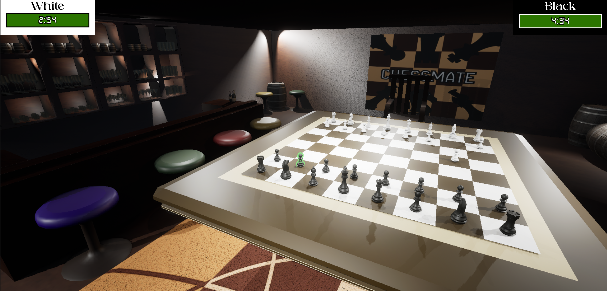
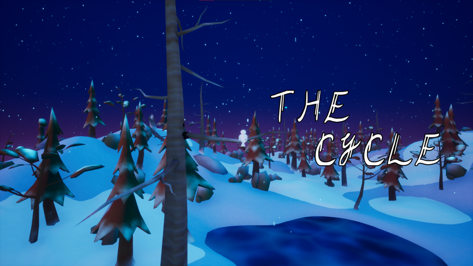
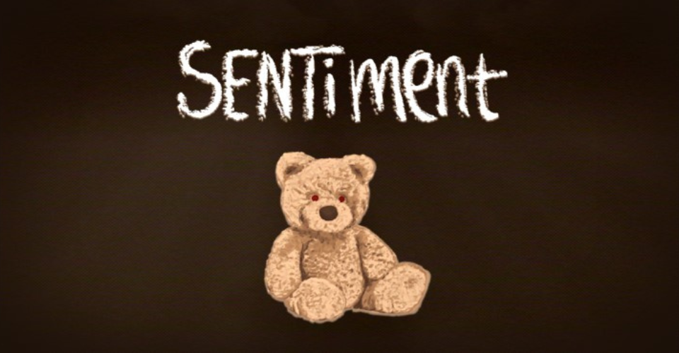

School project developed within three-week deadline. I implemented the multiplayer host/join functionality, turn-based gameplay, replicated HUD for chess timers, and replicated chess moves between players. This was a prototype build and had a few unfinished gameplay features, such as castling and checkmate, that were left out due to time constraints. All 3D models in the game (including the chess pieces) are original assets developed by my teammate.


A lightweight, browser‑based Whack‑a‑Mole game that I built with HTML, CSS, and JavaScript. It includes animated gameplay, sound effects, and score tracking, all playable directly inside the site’s terminal‑style interface. (Click on "Play Game" to try it out!)
At my first game jam, our 8-person team created "The Cycle" in 48 hours and won Best Gameplay Design out of 76 teams. I contributed to both the game's design and development, serving as the UI/UX programmer and designer. Inspired by the theme "The Hunt," the game casts players as an owl hunting rabbits in a serene, snowy forest, emphasizing the more beautiful and natural aspects of the hunt.

A psychological horror game that delves with themes of a dysfunctional family. You play as a little boy trying to take control of a situation that is beyond him. This game submission at the Behaviour Interactive Game Jam 2026 won us two awards, the Participants' Pick Award and Best Audio Award. I served a generalist role on the team, contributing to the narrative design and to the AI's behavior and VFX, but my main focus was on programming the gameplay and UI skill-checks.
